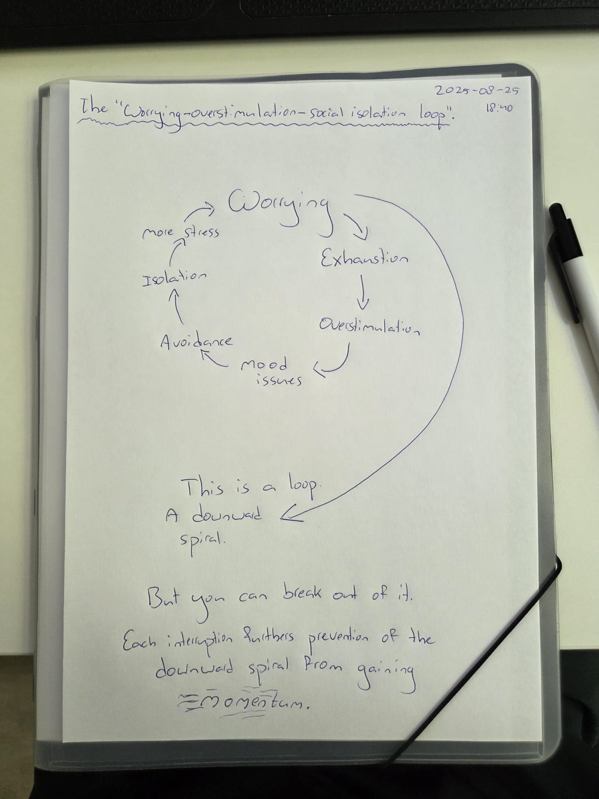

August 25, 2025
Another thing I've been thinking about lately, something that has AGAIN become apparent to me, is that my main struggle just seems to be that I have the tendency to get stressed out about things. I worry. Anxiety. And then I overexhaust myself. That leads to overstimulation, and eventually burnout. When things get bad I start to have problems with regulating my emotions, I tend to get in a bad mood, I start to avoid people because they exhaust me, that in turn leads to social isolation. I also start avoiding for example busy streets, or doing fun things because they are exhausting. Those things in turn reinforce being stuck in my head and worrying about stuff.

#worrying #stress #overstimulation
@keyonlog